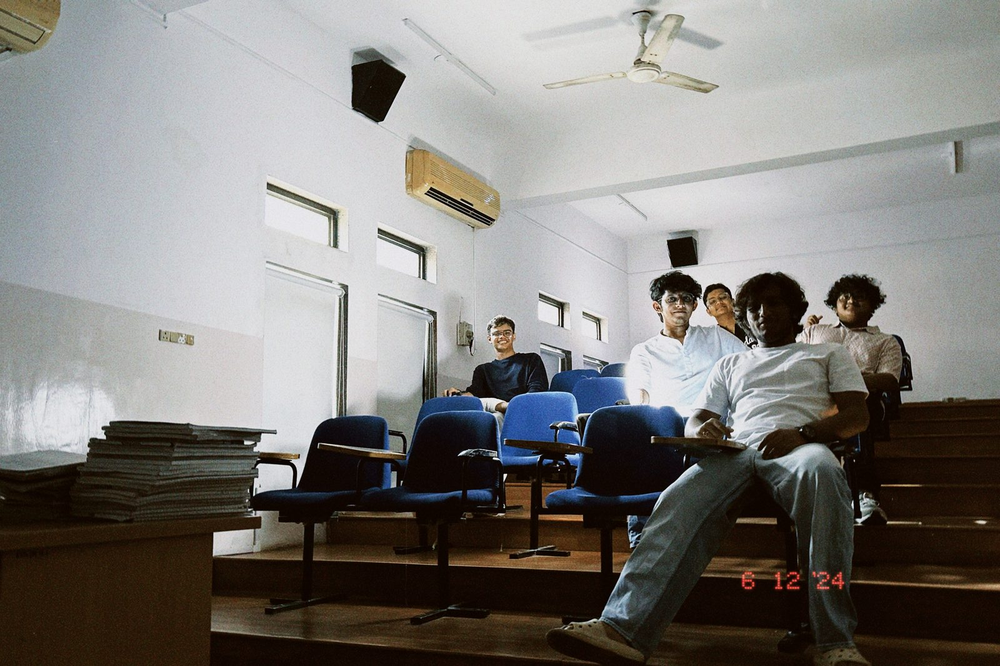

shravan lad
ithaca, ny (traveling between new york, boston and india)
student at cornell, learning to code by building this site.
i take film photos, write, and keep a pile of music i love. this is the one place to get to know me.
for if you have taste, opticsbyshrvn